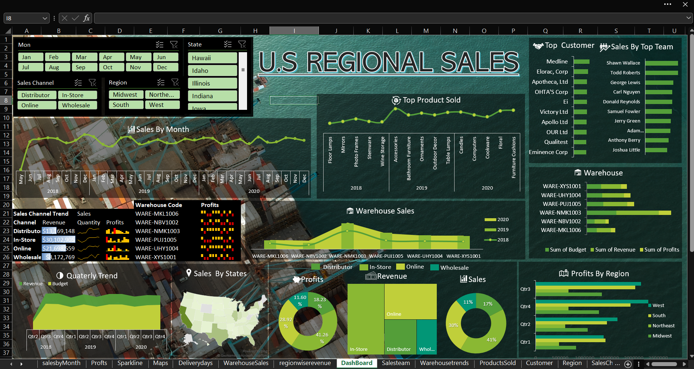

Vipin Goriparthi
Project: Random Market Sales Analysis
Nov 2021 | Data Analysis Project
This project involved performing exploratory data analysis on a random market sales dataset to extract meaningful business insights and trends.
Overview
Using Excel and various data analysis techniques, I built a functional dashboard to visualize key performance indicators (KPIs) and sales trends.
Key Findings
- Identified highest-performing sales channels.
- Analyzed seasonal trends in market demand.
- Visualized geographical sales distribution.
The project highlights the importance of data-driven decision making and the power of simple yet effective visualization tools in a professional environment.